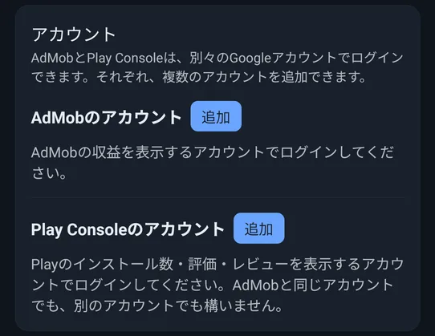

📖 はじめに（この準備でできること）
アプリ成績表は、AdMobの広告収益と、Google Playのインストール数・評価・レビュー・品質を、1つのアプリでまとめて確認できるダッシュボードです。使いはじめる前に、データを読み込むための準備が必要です。
準備は、「アカウントのログイン」と「Playのレポートの保存先の登録」の2つです。
🛠️ 詳しい使い方
まずは試してみる（デモモード）
アカウントの登録がまだのときは、各タブに「まだデータがありません」という案内が出ます。この案内の下にある「デモモードで利用する」を押すと、サンプルのデータで、アプリの画面をひととおり確認できます（ログインは要りません。Androidのみ）。
読み込みが終わると、アプリの再起動をうながすダイアログが出ます。再起動すると、サンプルのデータが入った状態で使えます。
デモモードの間は、データの取得は行われません。設定画面の一番上に出る「初期化」を押すと、サンプルのデータを消して、アプリを入れた直後の状態に戻せます。
AdMobのアカウントでログインする
「設定」タブの「AdMobのアカウント」の横にある「追加」を押し、AdMobの収益を見たいGoogleアカウントでログインします。ログインすると、そのアカウントのアプリがすべて一覧に加わり、「収益」タブに広告収益が表示されます。
- アカウントは、複数追加できます。登録したアカウントは、1行に「メールアドレス・ログイン中・ログアウト」の形で並びます。
- 同じ種類に、同じアカウントでログインし直したときは、前のものが置き換わります。
- ログインが切れたアカウントには、「ログインし直す」の案内が出ます。押して、もう一度ログインしてください。
- AdMobのアプリ一覧は、アカウントごとに読み込み、全部を1つの一覧にまとめます。

Play Consoleのアカウントでログインする
「設定」タブの「Play Consoleのアカウント」の横の「追加」から、Playのインストール数・評価・レビュー・品質を見たいGoogleアカウントでログインします。AdMobと同じアカウントでも、別のアカウントでも構いません。
- このアカウントには、Play Consoleの「レポートのダウンロード」権限が必要です。権限が足りないと、「Playのデータを読む権限がありません」と案内が出ます。その場合は、権限のあるアカウントでログインし直してください。
- レビューへの返信には、そのアプリへ返信する権限のあるアカウントが必要です。
Playの「レポートの保存先」を登録する
インストール数・評価・国別のインストール数は、Play Consoleが出力するレポートから読み込みます。その保存先の名前を、Playのアカウントごとに登録します（登録するまで、「インストール」「評価」「品質」のタブには、未登録である旨が表示されます）。
- Play Consoleを開き、左メニューの「アカウントの管理」→「レポート」→「統計情報」を開きます。
- 画面右の「Cloud Storage URI をコピー」を押します。
- コピーした文字列（
gs://pubsite_prod_…の形）を、アプリの設定にある、Playのアカウントの「追加」のポップアップに貼り付けて追加します。
開発者アカウントが複数あるときは、開発者アカウントごとに、同じ手順で追加します。探し方に迷ったときは、設定の「レポートの保存先」の横の「?」から、同じ説明をもう一度読めます。
データを取得する
アプリを開くと、データを自動で取得します（設定の「自動取得」がオンのとき）。取得中は、画面を覆わず、右下の丸いボタンのまわりが回ります。取得中も、ほかの操作を続けられます。
各タブのタイトルの横には、取得の状態（「データ全取得完了」「データ取得一部失敗あり」「データ取得中…」「データ未取得」と、その日時）が表示されます。タップすると、項目ごとの成功・失敗の一覧が開きます。
❓ よくある質問（FAQ）
Q ログインしても、収益やインストール数が出ません。
AdMobの収益は、AdMobのアカウントでのログインが必要です。インストール数・評価・品質は、Play Consoleのアカウントでのログインと、「レポートの保存先」の登録が必要です。どちらかが足りないと、そのタブには登録をうながす案内が出ます。設定で、アカウントと保存先を確認してください。
Q 「レポートの保存先」は、どこで調べればよいですか？
Play Consoleの「アカウントの管理」→「レポート」→「統計情報」を開き、「Cloud Storage URI をコピー」を押すと、gs://pubsite_prod_…で始まる文字列がコピーできます。これをアプリの追加画面に貼り付けます。
Q AdMobとPlay Consoleで、Googleアカウントが別々です。
AdMob用・Play Console用に、別々のアカウントでログインできます。それぞれ複数追加でき、同じアプリが複数のアカウントから見えるときは、パッケージ名で1つにまとめられます。
Q iPhoneでも使えますか？
いいえ。このアプリはAndroid用です。